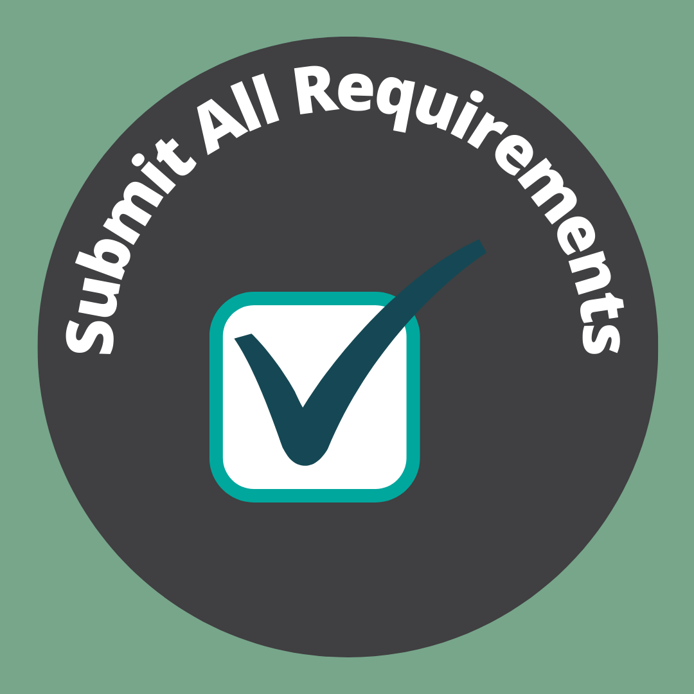

Important Notices For High School Seniors
Ready to make the most of your senior year? Here are three tips to help you get started!
Tip #1: Do the Research and Know Your Options.
There's a lot of differnt options for your next steps after high school. Whether it be college, career, military, or a gap year, it's important that you take the time to think about what will be best for you.
Do a career interest inventory or "what should my major be" quiz, speak to your college readiness counselor, and admissions counselors, or a professional in a field your interested in. They can help you research!
Tip #2: Make a Schedule and Keep to Deadlines
There will be a lot of deadlines coming up, so keep ahead by writing out all the deadlines in advance so you don't miss any opportunities. You'll need a planner. Check out some recommendations here!

Tip #3: Submit All Your Requirements!
Every option that you look into will have different requirements for your to submit: Do you need FAFSA or CSS Profile? Transcripts or SRAR? TSI or ASFAB? In your research, make a list of what is being asked of you and add them to your planner too! Make sure you have everything turned it, because if not it might nullify your application. Yikes!